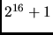
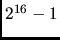

Tape reading/writing is more of an art than a science. Here are a few tips.
% dd if=/dev/rmtx of=temps bs=32767 conv=noerrorHere, /dev/rmtx (not the real name of the device, it varies from system to system) is your regular (rewinding) tape device. In the option, bs=32767, we gave the right blocksize () for an IBM/RS6000. Try
bs=32765 () on a SUN.
This will dump the entire contents of the tape onto
a single file.
#! /bin/sh
DEV=/dev/nrxt0 # non rewinding tape device
mt -f $DEV rewind
j=0
jmax=40
while test "$j" -ne "$jmax"
do
j=`expr $j + 1`
echo "writing tape file $j"
segywrite tape=$DEV bfile=b.$j hfile=h.$j verbose=1 buff=0 < ozdata.$j
done
exit 0